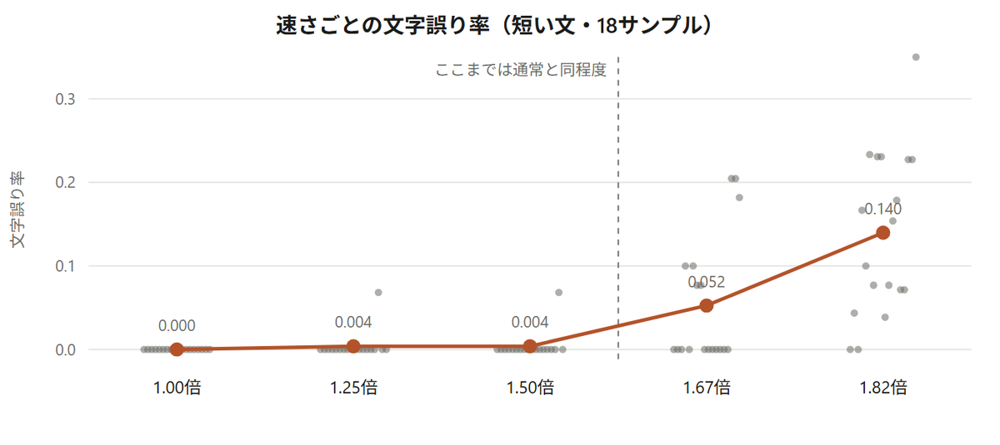
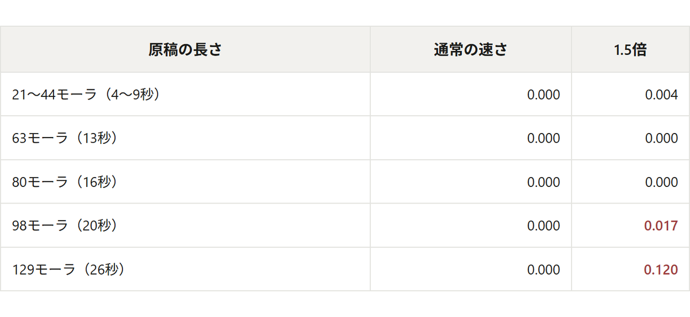
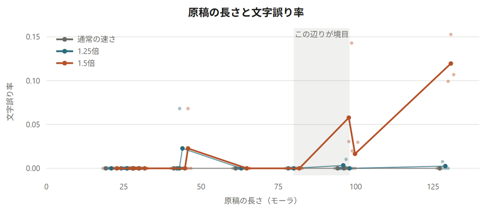
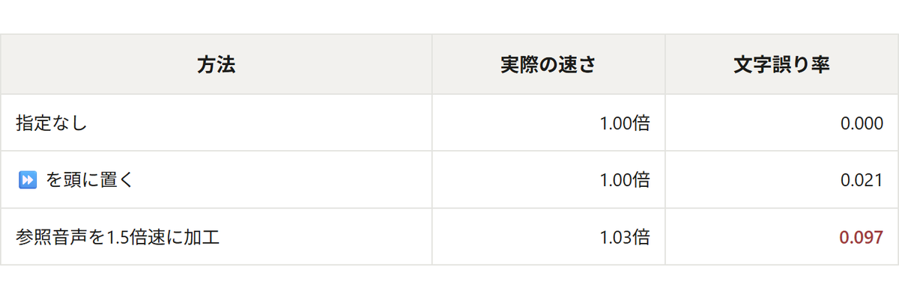
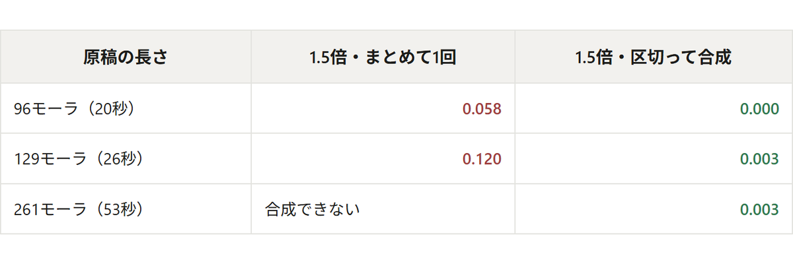
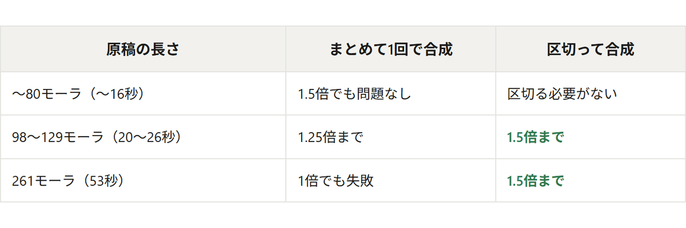

Irodori-TTS には話す速さの指定があります。このモデルはテキストから「この文は何フレームぶんの長さになるか」を予測する部分を持っていて、duration_scale はその予測値に掛ける倍率です。0.667 を渡すと、予測された長さのおよそ3分の2に収まるように、つまり1.5倍の早口で出力されます。（できあがった音声を再生側で速くするのとは違い、声の高さは変わりません。）
30モーラの原稿に duration_scale=0.667 を渡すと、指定どおり1.5倍の速さになりました。
モーラは日本語の音の長さの単位で、「きょ・う・と」なら3モーラです（拗音は前の字と合わせて1つ）。
原稿
新幹線が混んでいて、座れたのは名古屋を過ぎてからでした。（30モーラ）
しかし、生成させる文章が長くなると事情が変わってきます。129モーラの原稿に同じ duration_scale=0.667 を渡すと、読まれない語句が出ました。4文ぶんの原稿をまとめて1回で合成しています。
原稿
先週、久しぶりに京都へ行ってきました。新幹線が思ったより混んでいて、座れたのは名古屋を過ぎてからでした。宿は川沿いの古い建物で、朝は窓の外の音で自然に目が覚めました。お土産を買いすぎてしまって、帰りの荷物が行きの倍になりました。（129モーラ）
1.5倍のほうを書き起こしたもの
先週、久しぶりに京都へ行ってきました。新幹線が思ったより混んでいて、座れたのは名古屋を過ぎてからでした。宿は川沿いの古い手もので、朝は窓の外の音で自然に目が覚めました。お土産を、お見えの荷物が行きの場合になりました。
22.68秒の原稿が15.12秒に縮みました。長さは指定した1.50倍のとおりです。ただ、最後の文の「買いすぎてしまって、帰り」が読まれていません。前後の語ははっきり聞こえます。「お土産を」のあと「の荷物が行きの倍に」へ直接繋がり、あいだの11文字が消えています。
irodoriTTSが早口でも安定させられるのでしょうか？4種類の方法で検証しました。
duration_scale は連続値なので、0.8（1.25倍）から0.55（1.8倍）まで刻みました。どのあたりの倍率から語句が読まれなくなるのかを測ります。
Irodori-TTS は、テキストに混ぜた絵文字で話し方を指定できます。囁き、ため息、笑いといった指定が用意されていて、その中に ⏩ があります。公式の入力画面では、この絵文字に「早口」「一気に、急いで」というラベルが付いています（gradio_emoji_palette.py）。速さが変わるとは書かれていませんが、ラベルどおりなら一文字置くだけで済むので、試してみました。
このモデルは、真似てほしい声を参照音声として受け取ります。参照音声のほうをあらかじめ1.5倍速に加工しておけば、参照音声の話し方は出力にも伝わり、出力も速く喋るのではないかと考えました。加工には声の高さを保つ時間伸縮を使います。
1章で語句が消えたのは長い文でした。短い文では起きていません。それなら、文末（。？！）で原稿を区切って短い塊にしてから1つずつ合成し、あいだに無音を挟んで繋げば、塊ごとには短い文と同じ条件になります。今回は1塊が25モーラを超えないようにしました。25モーラは、このくらいの長さになります。
もう少し日程に余裕を持たせたいと思います。（25モーラ）
1塊が25モーラに収まらないときは、読点でも区切ります。
できた音声が元の原稿とどれだけ文字が食い違うかを見ます。集計したのは文字誤り率（CER）で、0に近いほど原稿どおりに読めています。
語句が消えるかどうかは毎回同じではないので、同じ条件を3回ずつ、乱数の種を変えて生成しました。原稿は21モーラ（約4秒）から261モーラ（約53秒）まで、長さを変えたものを用意しています。一番短い21モーラは、1文だけの短いものです。
先週、久しぶりに京都へ行ってきました。（21モーラ）
以下に出す数字は、短い原稿6本 × 乱数の種3つ = 18サンプルの平均です。長い原稿については、3本 × 種3つ = 9サンプルで見ています。
声には、商用利用と音声合成への利用が認められているつくよみちゃんコーパスを使いました。
短い文（21〜44モーラ）で５種類の倍率でテストしました。小さい灰色の点が18サンプルそれぞれ、橙の線がその平均です。

点が下（0付近）に集まっているほど、原稿どおりに読めています。
通常の速さでは、18サンプルすべてが誤り0でした。1.25倍と1.5倍も0.004で、ほとんどの点が0に貼りついたままです。1.67倍で0.053、1.82倍で0.140まで上がります。1.5倍までは通常と変わらず、1.67倍を境に誤りが増えます。
原稿
新幹線が混んでいて、座れたのは名古屋を過ぎてからでした。（30モーラ）
ここまで来ると、消えるというより全体が不明瞭になります。
同じ1.5倍でも、原稿の長さによって結果が変わります。


原稿1本ごとの値です。このモデルは1秒あたり約4.9モーラで喋るので、100モーラはおよそ20秒にあたります。
通常の速さは、どの長さでも誤り0でした。80モーラまでは1.5倍にしても1つを除いて0のままです。98モーラで誤り率は0.017、129モーラで誤り率0.120まで上がります。
誤りが出はじめる98モーラは、5文をまとめたくらいの長さです。
先週、久しぶりに京都へ行ってきました。二泊三日の、ゆっくりした旅行になりました。新幹線が思ったより混んでいました。座れたのは名古屋を過ぎてからです。宿は川沿いの古い建物でした。（98モーラ）

⏩ を置いても速さが変わりませんでした。発話の長さを予測する部分のコードを読むと、絵文字については個数を数えているだけで、どの絵文字が入っているかは区別していません。⏩ も 🐢（ゆっくり）も、長さの予測に対しては同じ入力になります。話し方のほうには効いているかもしれませんが、速さの指定としては使えません。
参照音声を1.5倍速にする方法だと、たしかに読む速さは速いですが、文と文の間の間が長くなるため尺としてはそこまで差が産まれません。そのうえ誤り率が0.097まで上がっています。参照音声を時間伸縮したときの歪みが、真似る対象の声質ごと持ち込まれたのだと思われます。速くならずに声だけ荒れました。
原稿
新幹線が混んでいて、座れたのは名古屋を過ぎてからでした。（30モーラ）
どちらも通常の速さ（5.52秒）とほとんど変わりません。

1章で語句が消えていた原稿が、区切って合成すると0.003まで戻ります。通常の速さで合成したときと変わりません。
原稿
先週、久しぶりに京都へ行ってきました。新幹線が思ったより混んでいて、座れたのは名古屋を過ぎてからでした。宿は川沿いの古い建物で、朝は窓の外の音で自然に目が覚めました。お土産を買いすぎてしまって、帰りの荷物が行きの倍になりました。（129モーラ）
区切ったほうが3.8秒長いのは、塊のあいだに無音を挟んでいるためです。喋っている部分の速さは変わりません。
表の一番下、261モーラの行が「合成できない」となっているのは、このモデルの出力が30秒までと決まっているためです。53秒ぶんの原稿をまとめて渡すと、30秒で打ち切られて後半が入りません。区切って合成すれば、この上限も関係なくなります。
原稿
先週、久しぶりに京都へ行ってきました。新幹線が思ったより混んでいて、座れたのは名古屋を過ぎてからでした。宿は川沿いの古い建物で、朝は窓の外の音で自然に目が覚めました。お土産を買いすぎてしまって、帰りの荷物が行きの倍になりました。二日目は少し足を延ばして、宇治のあたりまで歩いてみました。川沿いの道が思っていたより長くて、途中で何度も休みました。最終日は雨に降られて、駅の喫茶店で時間をつぶしていました。次に行くときは、もう少し日程に余裕を持たせたいと思います。（261モーラ）
15の塊に分けて合成したものです。どちらも最後まで読まれています。
4種類のうち、うまくいったのは長い文を短く区切って合成する方法だけでした。絵文字タグと参照音声の加工では速さが変わらず、倍率だけで1.5倍にすると長い原稿で語句が消えます。区切って合成すれば、53秒の原稿でも1.5倍で最後まで読まれました。

切り替わるのは80モーラ（約16秒）と98モーラ（約20秒）のあいだです。16秒までなら1.5倍をそのまま使い、20秒を超えるなら区切る、と考えておけば足ります。1.25倍であれば、26秒の原稿まで区切らずに通せました。
区切るときは、文末（。？！）で切って1塊を25モーラ以下にします。40モーラまで許すと、3回に1回くらいの割合で語句が消えました。
なお、長い原稿を区切って合成するという回避策は、このモデルに限った話ではありません。Microsoft の VibeVoice も、公式ドキュメントで「速すぎる場合は同じ話者ラベルのまま複数ターンに分割する」ことを案内しています（vibevoice-tts.md）。
音声合成には、フリー素材キャラクター「つくよみちゃん」が無料公開している音声データを使用しています。
■つくよみちゃんコーパス（CV.夢前黎）
https://tyc.rei-yumesaki.net/material/corpus/